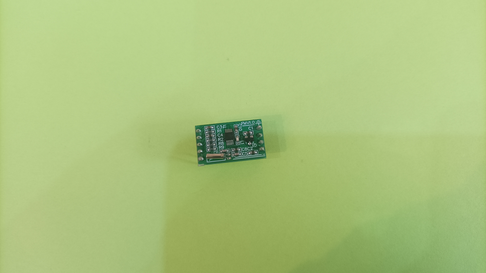
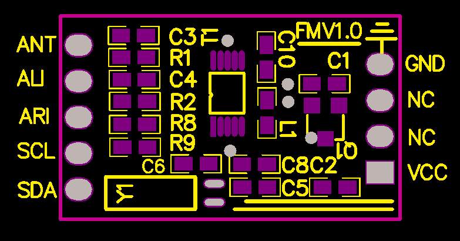
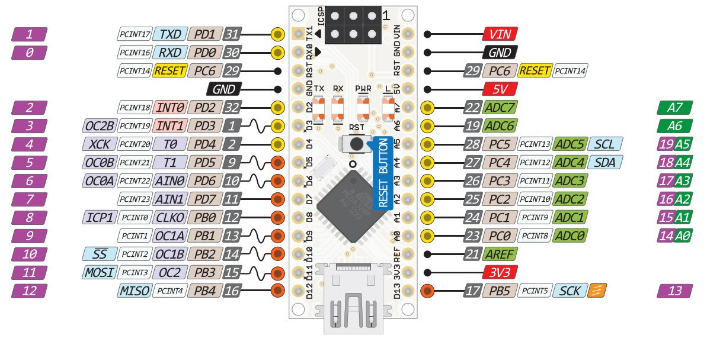
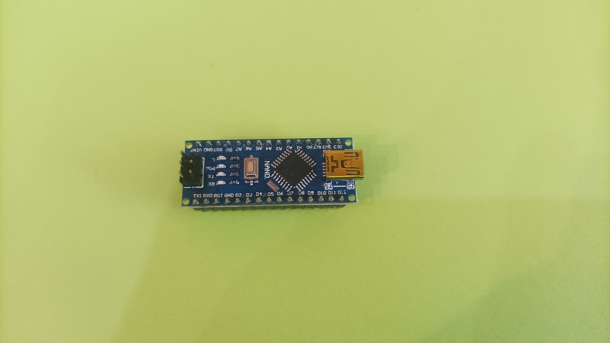
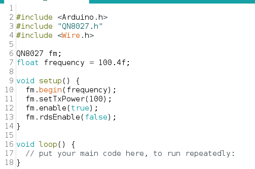
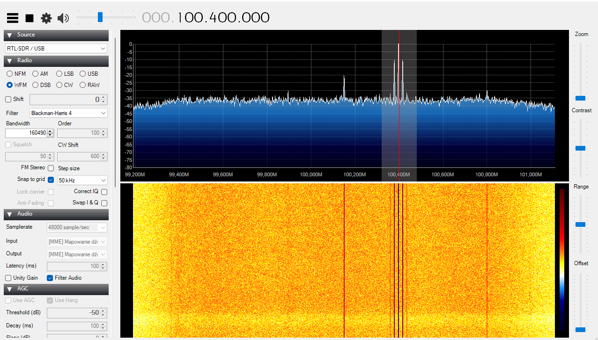

Na wstępie muszę poinformować iż autor nie ponosi odpowiedzialnosci za używanie tego typu konstrukcji!!!
Ciekawy układ nadawczy, można znaleźć pod nazwą QN8027 chip ten po jego zaprogramowaniu za pomoacą magistrali i2c, do pracy wymaga jedynie zasilania. Niewątpliwą zaletą jest jego szerokie pasmo przenoszenia, oraz to że posiada wbudowany koder stereo, a także RDS.
 Modół mini transmitera  Pinout transmiteraUkład do dzialania potrzebuje zasilania 3,3V, które można pozyskać z płytki Arduino nano. Płytka ta umożliwia nam również zaprogramowanie układu. W tym celu wykorzystujemy magistrale i2c.
 płytka Arduino nano opis wyprowadzeńŁączymy wszystko w całość za pomocą przewodów do prototypowania z naszym Arduino. Podpinamy cztery przewody:, zasilanie, masa oraz dwa od komunikacji.
 Płytka Arduino nanoPo zmontowaniu wszystkiego, możemy zaprogramować układ. Korzystamy z ogólnodostępnej biblioteki na github pobieramy pliki i konfigurujemy nasz nadajnik, tak aby pracował na wybranej przez nas czestotliwosci.
 kod do konfiguracji chipuUruchomaienie
Po zaprogramowaniu układu samoczynnie rozpocznie się emiasja sygnału na zadanej w kodzie czestotliwosci. Sygnał można odebrać za pomocą dowolnego radioodbiornika bez podpięcia sygnału modulującego, usłyszymy ciszę.
 Zrzut ekranu z SDR sharpZmiana czestotliwosci możliwa jest po zresetowaniu układu i jego ponownym zaprogramowaniu. Układ wówczas wystartuje na innej zadanej przez nas czestotliwosci.
Bonus
Producent podaje zakres pracy układu w czestotliwosci 88-108 MHz, ale po podaniu wyższej czestotliwosci układ równaież rozpocznie emisje sygnału. Jest to niewątpliiwie wada oraz zaleta tego układu. Pamietać należy o tym, aby nie zakłucać innych emisji.